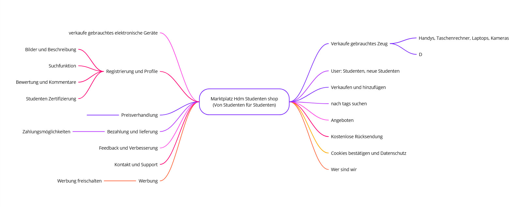
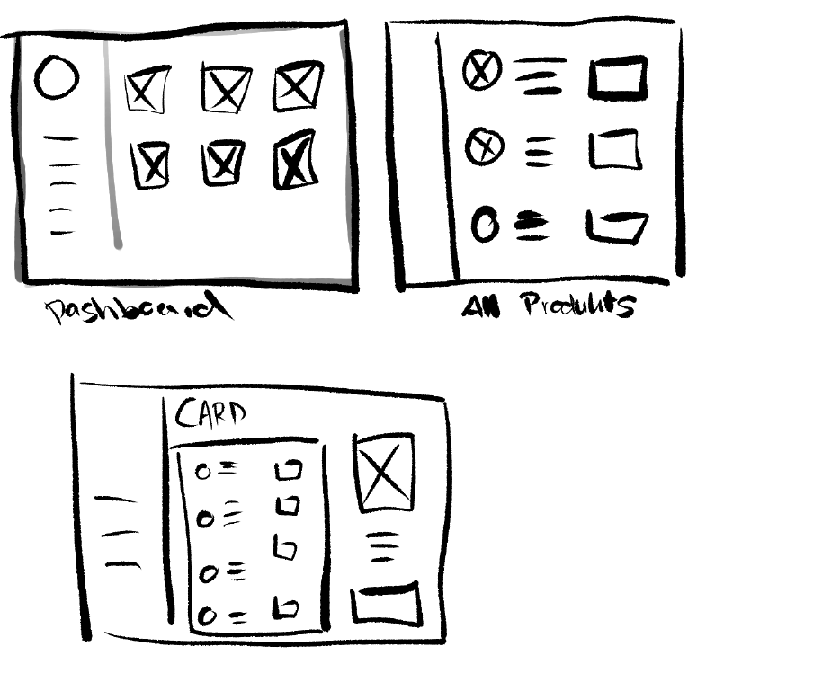

A simple marketplace app tailored to our campus community, designed to make student-to-student buying and selling easy, fast, and secure.
Project Type: Software Development
Role: Designer & Developer
Duration: Q3 2023
A user-friendly desktop application that enables students to sell and buy second-hand items easily within their campus environment. It was our first large-scale JavaFX project, where we combined the basics we learned in our first semester with new concepts in UI development, problem-solving, and collaborative workflow.


I aimed to go beyond functionality and explore how technical projects can be designed with the user
in mind. My personal goal was to make the UI clear and accessible—even to people who aren't
tech-savvy—and use this opportunity to improve my frontend logic and visual consistency.
To better understand how users interact with peer-to-peer marketplaces, we analyzed apps like Vinted and local listing platforms. We conducted informal interviews with students to understand pain points when buying or selling second-hand items and sketched out basic assumptions based on their needs.
Students lack a simple, safe, and centralized way to exchange second-hand goods within their campus community. Existing platforms feel too broad, overwhelming, or impersonal for local, student-centered transactions.
We had many questions right off the bat...
We analyzed responses and feedback to extract clear needs...
This project marked a turning point where I began connecting design decisions with technical execution. I started noticing how small layout details could change how people use a feature, and learned to prototype, test, and iterate ideas in code. It also improved how I communicate design intent within our team.
We developed the app in Java using JavaFX for the GUI and CSS for styling. Core functionality included user authentication, item listing, and dynamic content rendering. The development process was shaped by frequent iteration, bug fixing, and learning how to break features into modular components for testing and deployment.
We designed the user journey to be intuitive and efficient, ensuring that each step felt familiar and easy to navigate. A user could quickly register or log in with their email credentials, then immediately access a personalized feed showing the most recent listings. From there, they could browse categories or use the search bar to find specific items. Selecting a product opened a detailed view with images, a description, and seller contact options. Communication between buyer and seller was handled through a built-in messaging system that kept everything within the app. Listing an item was equally seamless, requiring only a few fields and an image upload before it was ready to go live.
The application was built using a modular architecture inspired by the Model-View-Controller (MVC) design pattern. This allowed for a clear separation between data management, visual layout, and interaction logic. Each section of the app—such as login, item listing, browsing, and messaging—was structured as an individual scene, making it easier to develop and test independently. The views were constructed using JavaFX, styled through custom CSS to maintain consistency, while the controllers handled all navigation and user input. This structure kept our development process organized and scalable as the project evolved.
At the beginning of the project, we started with simple paper sketches to outline the structure and layout of our marketplace. These low-fidelity wireframes helped us get quick feedback and iterate on the layout before committing to development. We focused on clarity—designing with minimal distractions and prioritizing functionality. Our earliest ideas included a card-style layout for listings, clear filtering options, and a simple upload flow. These concepts helped us define what the app should do at its core, and what kind of visual hierarchy would support a seamless experience.
The first working prototype was developed directly in JavaFX and featured all core functionalities, including account registration, login, item browsing, listing creation, and internal messaging. We kept the visuals intentionally basic at this stage so we could focus on testing logic, navigation, and error handling. Multiple iterations were required, especially around input validation and scene transitions, but each round brought us closer to a stable, usable app. Once the foundational features were tested thoroughly, we moved on to implementing our design system for a more polished final appearance.
Since we were working within the limitations of JavaFX, styling had to be approached with care. Using CSS, we created a visual identity that was both calm and functional. The design leaned on soft edges, muted greens and greys, and a generous use of whitespace to evoke a sense of trust and familiarity. Font choices emphasized readability, and contrast was carefully balanced to ensure accessibility across different devices. Every visual element was kept consistent across the application, which not only made it feel more professional but also easier to use.
We completed and delivered the project as a functional desktop application, fully documented and submitted as part of our university coursework. The submission included not only the application itself but also the full development process, from planning and wireframing to implementation and testing. Looking back, this project stands as our first major software product—a tangible result of everything we had learned up to that point.
Tools used:

A music streaming app with integrated social features that encourage sharing, discovery, and meaningful interaction between users.
View project
A conversational AI assistant designed to support elderly users, especially those with dementia, by providing intuitive and human-like interactions.
View project
An interface extension for NextCloud that introduces polls within chat, empowering users to make collaborative decisions with ease.
View project

{kind=link}
{kind=link}
{kind=link}
{kind=link}
{kind=link}
{kind=link}
{kind=link}